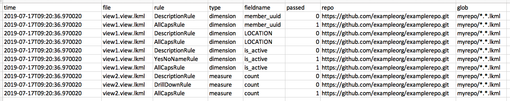

Linter Example¶
In this example, we run the linter on a couple of view files.
Imagine that you had git cloned some LookML repo into the gitrepo folder. In this example, we have two files:
view1.view.lkml¶
view: view1 {
dimension: member_uuid {
type: string
}
dimension: LOCATION {
type: string
}
dimension: is_active {
type: yesno
}
}
view2.view.lkml¶
view: view2 {
sql_table_name: `dw.members` ;;
measure: count {
type: count
}
}
Both are simple, valid LookML files.
Config file¶
The example_linter_config.json defines a few things:
{
"git": {
"url": "https://github.com/exampleorg/examplerepo.git",
"folder": "gitrepo"
},
"infile_globs": [
"gitrepo/*.*.lkml"
],
"rules": {
"field_level_rules": [
{"name": "DescriptionRule", "run": true},
{"name": "DrillDownRule", "run": true},
{"name": "YesNoNameRule", "run": true},
{"name": "AllCapsRule", "run": true}
]
},
"output": {
"csv": {
"file_output": "linter_file_report.csv",
"field_output": "linter_field_report.csv"
}
}
}
It defines which files we want to process (via the infile_globs list which, in this case, specifies all the .lkml files in examplerepo). It defines the temporary files that LookML will be parsed to as JSON files (parsed_lookml.json).
The config specifies the set of rules to run. In this example, we run four field-level rules (field meaning that they apply at the individual dimension, dimension_group, and measure level, not at file or repo level):
DescriptionRule: specifies that
dimensions,dimension_groups, andmeasuresshould have descriptionsDrillDownRule: specifies that measures should have drill downs
YesNoNameRule: specifies that
yesnodimension names should start withis_AllCapsRule: specifies that
dimensions,dimension_groups, andmeasuresshould not have descriptions with names that are all caps, as rthey are too SHOUTY!
There are more rules than this, and it is easy to create your own. For this example, however, we just run these four.
Finally, the file specifies to write the report to CSV.
(There are additional options that can be specified in the config file.)
Runing¶
Run the linter with
cd examples/linter
python ../../run_linter.py --config example_linter_config.json
and you should see output similar to:
python ../../run_linter.py --config example_linter_config.json
2019-07-17 09:20:36,969 INFO lookml_linter.py create_rules: Creating Field-level Rule DescriptionRule
2019-07-17 09:20:36,969 INFO lookml_linter.py create_rules: Creating Field-level Rule DrillDownRule
2019-07-17 09:20:36,969 INFO lookml_linter.py create_rules: Creating Field-level Rule YesNoNameRule
2019-07-17 09:20:36,969 INFO lookml_linter.py create_rules: Creating Field-level Rule AllCapsRule
2019-07-17 09:20:36,970 INFO lookml_linter.py run: Processing myrepo/view1.view.lkml
2019-07-17 09:20:36,972 INFO lookml_linter.py run: Processing myrepo/view2.view.lkml
2019-07-17 09:20:37,000 INFO lookml_linter.py write_field_csv: Field output written to linter_field_report.csv
Examining the Output¶
If we open the linter_field_report.csv, we find the following:
time,file,rule,type,fieldname,passed,repo,glob
2019-07-17T09:20:36.970020,view1.view.lkml,DescriptionRule,dimension,member_uuid,0,https://github.com/exampleorg/examplerepo.git,myrepo/*.*.lkml
2019-07-17T09:20:36.970020,view1.view.lkml,AllCapsRule,dimension,member_uuid,1,https://github.com/exampleorg/examplerepo.git,myrepo/*.*.lkml
2019-07-17T09:20:36.970020,view1.view.lkml,DescriptionRule,dimension,LOCATION,0,https://github.com/exampleorg/examplerepo.git,myrepo/*.*.lkml
2019-07-17T09:20:36.970020,view1.view.lkml,AllCapsRule,dimension,LOCATION,0,https://github.com/exampleorg/examplerepo.git,myrepo/*.*.lkml
2019-07-17T09:20:36.970020,view1.view.lkml,DescriptionRule,dimension,is_active,0,https://github.com/exampleorg/examplerepo.git,myrepo/*.*.lkml
2019-07-17T09:20:36.970020,view1.view.lkml,YesNoNameRule,dimension,is_active,1,https://github.com/exampleorg/examplerepo.git,myrepo/*.*.lkml
2019-07-17T09:20:36.970020,view1.view.lkml,AllCapsRule,dimension,is_active,1,https://github.com/exampleorg/examplerepo.git,myrepo/*.*.lkml
2019-07-17T09:20:36.970020,view2.view.lkml,DescriptionRule,measure,count,0,https://github.com/exampleorg/examplerepo.git,myrepo/*.*.lkml
2019-07-17T09:20:36.970020,view2.view.lkml,DrillDownRule,measure,count,0,https://github.com/exampleorg/examplerepo.git,myrepo/*.*.lkml
2019-07-17T09:20:36.970020,view2.view.lkml,AllCapsRule,measure,count,1,https://github.com/exampleorg/examplerepo.git,myrepo/*.*.lkml
This is easier to interpret in a table:

We can see that in view1, all the dimensions failed the DescriptionRule. The LOCATION dimension failed the AllCapsRule, and the is_active dimension passed the YesNoNameRule.
In view2, the single measure failed the DescriptionRule and DrillDownRule but passed the AllCapsRule.